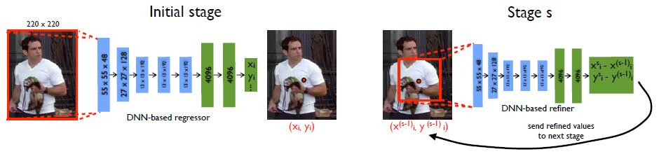
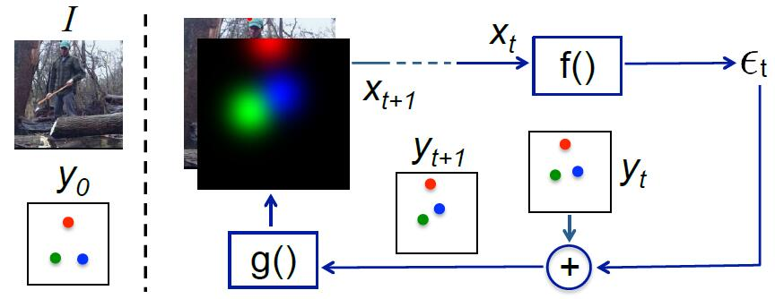
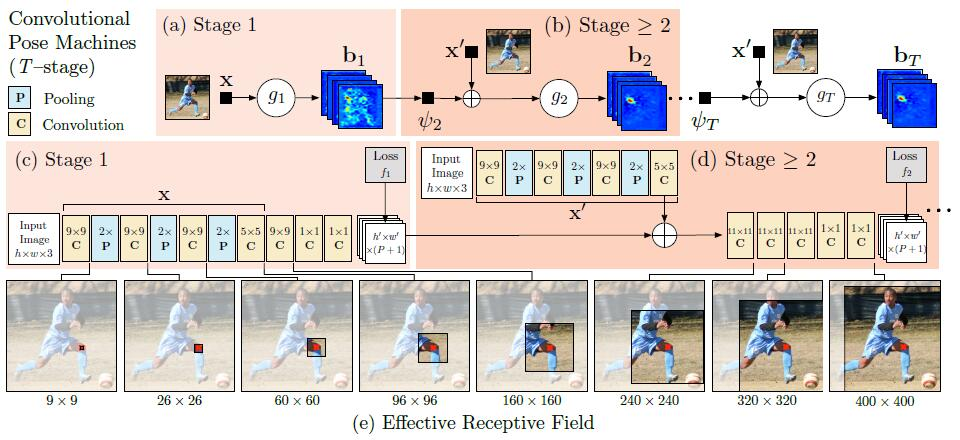
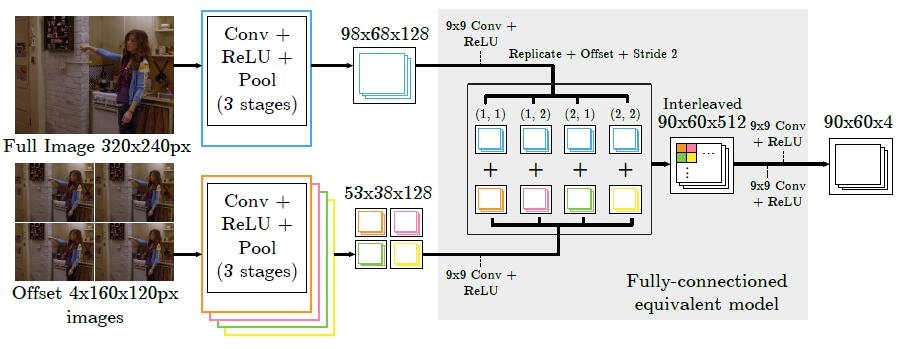

DeepPose: Human Pose Estimation via Deep Neural Networks. (2013)
The pose estimation is formulated as a DNN-based regression problem towards body joints.

IEF: Human Pose Estimation via Deep Neural Networks. (2013)
This paper propose a framework that expands the expressive power of hierarchical feature extractors to encompass both input and output spaces, by
introducing top-down feedback. Instead of directly predicting the outputs in one go, this paper use a self-correcting model
that progressively changes an initial solution by feeding back error predictions, in a process called Iterative Error Feedback (IEF).

CPM: Convolutional Pose Machines. (2016)
The contribution of this paper is to implicitly model long-range dependencies between variables in structured prediction tasks such
as articulated pose estimation. This is achieved by designing a sequential architecture composed of convolutional networks
that directly operate on belief maps from previous stages, producing increasingly refined estimates for part locations,
without the need for explicit graphical model-style inference.

Combine with Graph model
Joint Training of a Convolutional Network and a Graphical Model for Human Pose Estimation. (2014)
This paper proposes a new hybrid architecture that consists of a deep Convolutional Network and a Markov Random Field.

Human Pose Estimation using Deep Consensus Voting. (2016)
This paper propose a novel approach where each location in the image votes for the position of each keypoint using a convolutional neural net.